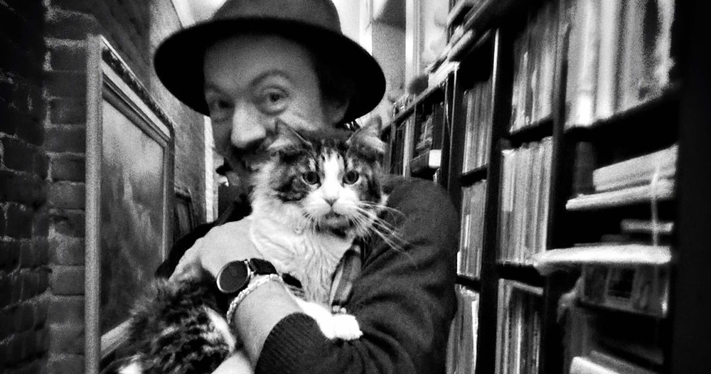

MY MAIN WEBSITES FOR MY PERSONAL PROJECTS:
- Curiouser House Publishing my very own publishing venture, focusing on classic and obscure titles.
- Pilcrow Monster my blog of the mundane; the thoughts that I sometimes need to get out of my head about nothing in particular.
- Reinhart Books all my thoughts about BOOKS! in blog format.
- The Old Curiouser Shop bookish merch! Stickers, blank journals, patches, puzzles... lots of cool stuff. Check it out.
- Instagram @MrPatrickReinhart I love photo-journaling on the IG, but I have been trying to figure out how to nix Meta and do all my phlogging here. Photo-logging = phlogging, yes? ..? or would it be phournaling?
- My profile on Fable a book club-oriented reading app, not only to keep track of what you've read and what you've thought about it, but also to engage with other people over books and share photos of your animal reading buddies and pretty bookshelves.
- My profile on Storygraph a great app for keeping track of what you've read and getting access to lots of stats you never knew you wanted to know. Much less socially-oriented than Fable.
- My curated corner of Bookshop.org your best bet for new books if you don't want to support Amazon. If you end up buying anything once you click the link, I might get a tiny kick-back, fyi. The link will take you to my curated corner of the website.
- Libro.fm - a referral link to the prime site for audiobooks outside of the goliath corporations.
- Threads @MrPatrickReinhart yeah, it's Meta's answer to Twitter, but it's been the one with the most engagement for me... mostly about Doctor Who.
- Bluesky @MrPatrickReinh.art great platform, not much engagement yet.
- TikTok @CuriouserHouse a fun platform but very hard to keep up with creating videos for. Still, I've got a handful of decent ones over there! Also @MrPatrickReinhart, but that one's even less likely to be updated in the near future.
- WEDDING WEBSITE a classy little website I put together that includes our short silent film-style video announcement that we are incredibly proud of.
 Atavistic gentleman scholar. Proud husband, and cat dad to the late great Harlow, and our current silly boy Jasper.
In addition to my pointy mustache, I have, for many years, cultivated a casual, classic men's wear-inspired sartorial enthusiasm. I'm very proud of my hat collection.
Most crucially I am BOOKISH if I am anything. I have always been a reader, and I am a collector, I have a decade's worth of experience being a dealer of rare and not-so-rare books, and I have illustrated a couple children's books. I have delved a little into bookbinding and even some very amateur font-making.
Bookishness and my interest in graphic design and research culminate in my main ongoing personal project: Curiouser House Publishing.
Having been a bookdealer for a decade, one talent I really enjoy applying to publishing is the research. I love researching old and odd books. I focus on works in the public domain: classics and obscure works worthy of resurrecting. This involves a degree of editorial considerations including what supplementary material I might be able to dig up. I design the covers and interiors and find illustrations and designs that are either in the public domain or are free for commercial use.
All of this equals a very affordable if time-consuming hobby. A hobby that is incredibly rewarding... and one that I haven't had nearly as much time or energy to devote to as I'd like. The few dollars of royalty here and there are bonus. Maybe one day it could become a profitable endeavor.
Ya'll're swell. Keep it up.
The Reinhart Brothers on Bandcamp. My brother plays fiddle in the Texas fiddle style, with me accompanying him on an old four-string tenor guitar. I also did the cover illustration.